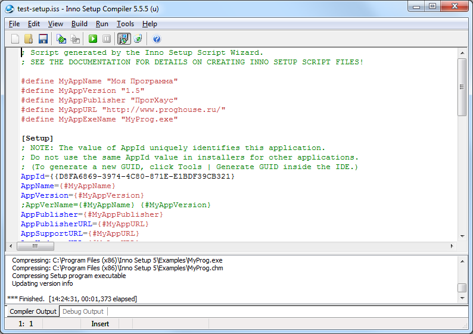

У меня появилась задачка - сделать инсталлятор для программы Windows, причем в качестве основы взять один из свободно распространяемых GUI-инсталляторов. Инсталлятор мой должен был выполнять не совсем обычный функционал - копировать файлы из уже существующих директорий, вызывать некоторые другие программы на разных этапах установки, даже делать несложные расчеты. Пересмотрела я много чего и поняла, что по большей части существует 3 группы инсталляторов:
- развесистые монстры, которые могут как джинн выполнить почти любую, даже самую замысловатую прихоть
- простые и довольно ограниченные в функционале заготовки под типовые задачи
- инсталляторы на базе скриптов
Что касается первых - искать среди них свободные и бесплатные явно не приходится. Вторые не подходили под мою не совсем тривиальную задачку. Среди третьей группы лидирует NSIS, вещь грандиозная, можно сделать что угодно, правда он полностью базируется на скриптах. Имеется плагин под Eclipse, который позволяет в конструкторе форм создавать формы страниц инсталлятора, поддерживается подсветка синтаксиса и другие полезности.

В результате я остановилась на вполне удачном варианте -
Inno. При помощи Wizard генерируется код заготовки под инсталлятор, потом есть возможность дополнять и менять этот код. Пишется этот код на паскале.
А вот и задачка, с которой я столкнулась: по завершению инсталляции скопировать директорию, не включенную в инсталлятор, при этом заменяя файлы, сравнивая их по timestamp'ам.
Откуда копировать директорию и куда - указывается во время установки.
Вначале я сделала попытку:
Source: "{code:GetFromDir}\*.*"; DestDir: "{code:GetToDir}"; Flags: comparetimestamp recursesubdirs;
К желаемому результату это не привело. Скрипт вываливался с ошибкой. Как я потом поняла, Source директория определяется во время компиляции инсталлятора, поэтому секция code еще не выполняется
Добавление флажка
'external' не дало желаемого результата, поскольку, хоть при наличии этого влажка Source директория определяется во время выполнения кода, тем не менее, это происходит раньше, чем я получаю значение из соотвествующего поля инсталлятора.
В результате, через некоторое время после чтения документации и общения с поисковыми системами у меня получилось следующее:
function CmpFileTimes(Source, Dest: TFileTime): Boolean;
begin
if Source.dwHighDateTime > Dest.dwHighDateTime then
Result := True
else if (Source.dwHighDateTime = Dest.dwHighDateTime) and
(Source.dwLowDateTime > Dest.dwLowDateTime) then
Result := True
else
Result := False
end;
procedure DirectoryCopy(SourcePath, DestPath: string);
var
FindRec: TFindRec;
SourceFilePath: string;
DestFilePath: string;
SourceLastWriteTime: TFileTime;
DestLastWriteTime: TFileTime;
DestFindRec: TFindRec;
begin
if FindFirst(SourcePath + '\*', FindRec) then
begin
try
repeat
if (FindRec.Name <> '.') and (FindRec.Name <> '..') then
begin
SourceFilePath := SourcePath + '\' + FindRec.Name;
DestFilePath := DestPath + '\' + FindRec.Name;
SourceLastWriteTime := FindRec.LastWriteTime;
if (FileExists(DestFilePath))then
begin
if FindFirst(DestFilePath, DestFindRec) then
begin
DestLastWriteTime := DestFindRec.LastWriteTime;
end;
end;
if FindRec.Attributes and FILE_ATTRIBUTE_DIRECTORY = 0 then
begin
if not(FileExists(DestFilePath)) or CmpFileTimes(SourceLastWriteTime, DestLastWriteTime) then
begin
if FileCopy(SourceFilePath, DestFilePath, False) then
begin
Log(Format('Copied %s to %s', [SourceFilePath, DestFilePath]));
end
else
begin
Log(Format('Failed to copy %s to %s', [SourceFilePath, DestFilePath]));
end;
end
else
begin
Log(Format('File: %s in actual state', [SourceFilePath]));
end;
end
else
begin
if not(DirExists(DestFilePath))then
begin
if CreateDir(DestFilePath) then
begin
Log(Format('Created %s', [DestFilePath]));
DirectoryCopy(SourceFilePath, DestFilePath);
end
else
begin
Log(Format('Failed to create %s', [DestFilePath]));
end;
end
else
begin
Log(Format('Existed %s', [DestFilePath]));
DirectoryCopy(SourceFilePath, DestFilePath);
end;
end;
end;
until not FindNext(FindRec);
finally
FindClose(FindRec);
end;
end
else
begin
Log(Format('Failed to list %s', [SourcePath]));
end;
end;
{kind=link}
 Скачать Zygo Joomshopping Review Captcha
Скачать Zygo Joomshopping Review Captcha
{kind=link}
{kind=link}